以智能告警为例
Dockerfile 是一个用来构建镜像的文本文件，文本内容包含了一条条构建镜像所需的指令和说明。
在自己的项目路径下编写Dockerfile:
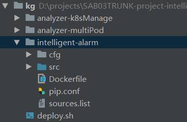
Dockerfile示例：
x
FROM ubuntu:16.04RUN mkdir /root/.config\ && mkdir /root/src\ && mkdir /root/cfgCOPY pip.conf /root/.config/pip/COPY sources.list /etc/apt/COPY cfg /root/cfgCOPY src /root/srcRUN apt-get autoclean\ && apt-get update\ && apt-get install -y --no-install-recommends\ build-essential \ vim\ python3-dev\ python3-pipRUN pip3 install --upgrade pipRUN pip3 install --upgrade wheelRUN pip3 --no-cache-dir install "setuptools<50.0.0" --upgradeENV PYTHONIOENCODING utf-8ENV LANG C.UTF-8RUN apt-get install tzdata -yRUN cp /usr/share/zoneinfo/Asia/Shanghai /etc/localtime && echo 'Asia/Shanghai'>/etc/timezoneEXPOSE 6688WORKDIR /root/srcRUN pip3 install -r requirements.txt
上传最新的项目代码到镜像打包环境（10.99.216.110）
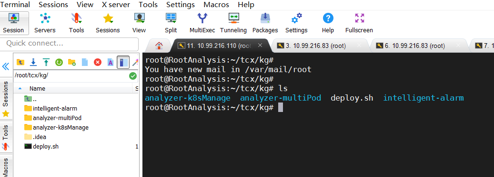
执行镜像构建脚本
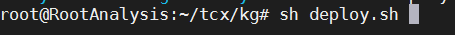
该脚本中的镜像构建命令如下：
xxxxxxxxxxdocker build --no-cache -t sa/itoa-intelligent-alarm:1.0.0 .构建完毕后保存镜像文件
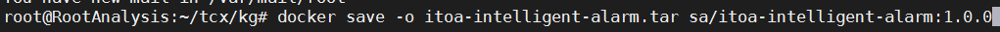
上传镜像文件包至SA环境（10.99.216.83）
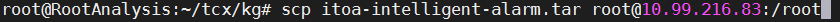
在SA服务器（10.99.216.83）上加载镜像
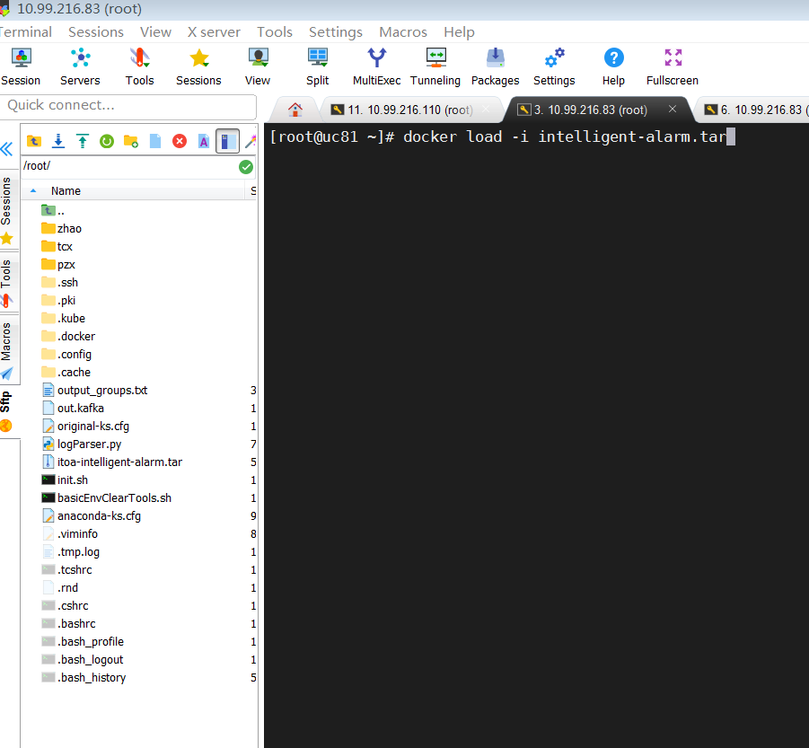
Pod代表部署的一个单位：Kubernetes中单个应用的实例，它可能由单个容器或多个容器共享组成的资源。
编写pod的yaml配置
Pod的yaml配置文件所在路径：
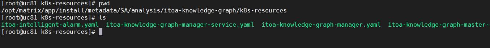
在SA代码中的路径：
health/package/itoa-3.0/metadata/analysis/itoa-knowledge-graph/k8s-resources/itoa-intelligent-alarm.yaml
yaml配置文件示例（itoa-intelligent-alarm.yaml，各参数详解可参考https://www.cnblogs.com/bigberg/p/9203619.html）：
xxxxxxxxxx apiVersionextensions/v1beta1 kindDeployment metadata nameitoa-intelligent-alarm namespacesa labels appintelligent-alarm spec replicas1 selector matchLabels appintelligent-alarm template metadata labels appintelligent-alarm spec nodeSelector seeranalyzer-labelseeranalyzer-label containersnameintelligent-alarm command"sh""/root/src/start.sh" imagesa/itoa-intelligent-alarm1.0.0 imagePullPolicyIfNotPresent resources limits cpu"5" requests cpu"1" # hostPort: 5555 volumeMountsnameapp-prop-v mountPath/root/cfg/intelligent-alarm.ini subPathre volumesnamelog emptyDirnamelog-diag hostPath path/var/log/matrix-diag/SAnameapp-prop-v configMap nameweb-backend-props #已经创建的configMap的名称 itemskeyitoa-intelligent-alarm.ini pathre配置文件
其中，configmap存储程序运行所需的外部文件，文件格式没有限制，SA环境上对应的路径：
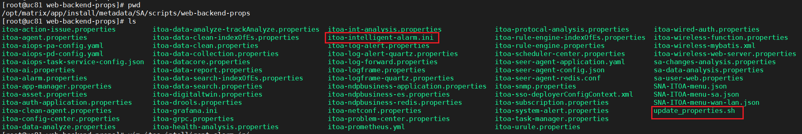
新增配置文件itoa-intelligent-alarm.ini，内容:
[DEFAULT]timeslot = 60timeout = 300group_overlap = 10low_prior_filter = Trueflapping_filter = Truekafka.consumer.servers = itoa-kafka-service1:6667kafka.consumer.group.id = intelligent-alarmkafka.consumer.topic = securityurl = http://itoa-health-analysis:8080/healthAnalysis/alarmToUCenter/send在SA项目代码中的路径为
health/package/itoa-3.0/metadata/scripts/web-backend-props/itoa-intelligent-alarm.ini
对于新增的配置文件，需执行目录下的update_properties.sh来使之生效，更新k8s的configmap
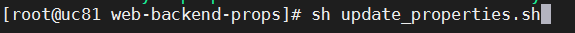
根据yaml配置创建pod
进入yaml文件所在路径，执行如下命令创建pod
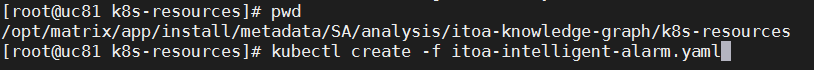
至此可以完成pod的创建，运行项目代码
以上是手动部署pod的流程，想要实现jekins构建时在代码中自动打包部署，还需要更新相应的构建脚本
health/package/3_makePackage.sh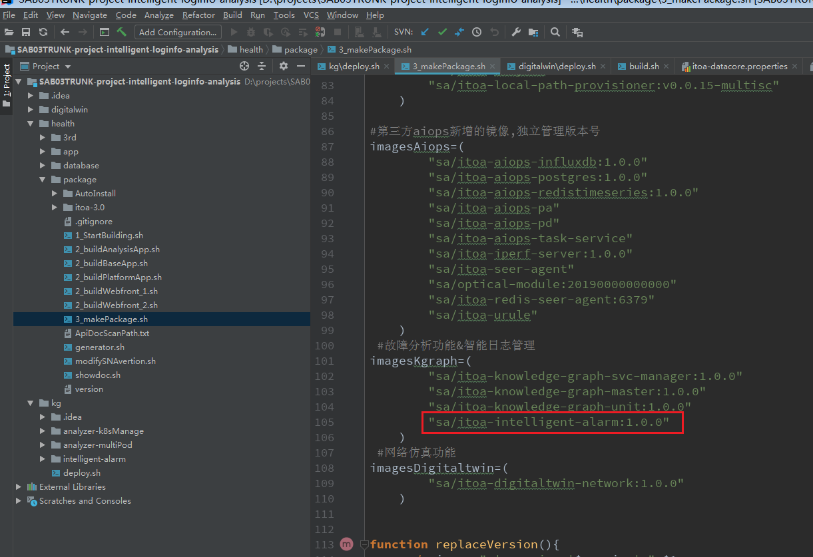
health/package/itoa-3.0/metadata/description.json
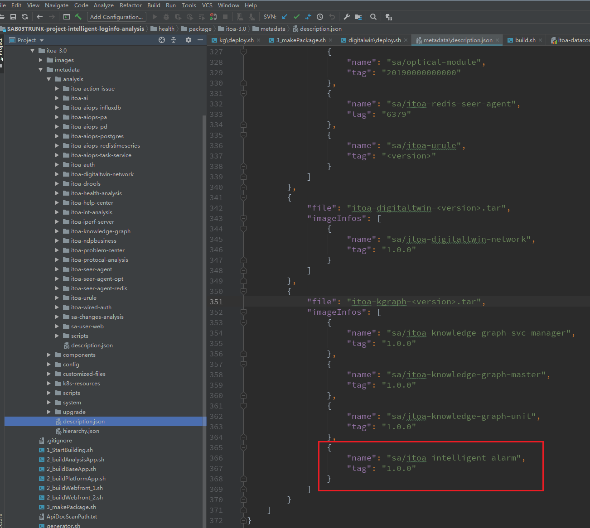
health/package/itoa-3.0/metadata/analysis/itoa-knowledge-graph/description.json
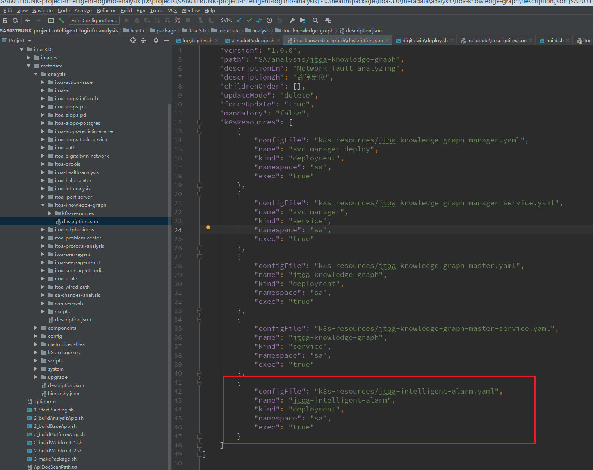
（智能告警目前不涉及对外接口，因此以分支站点模块举例）
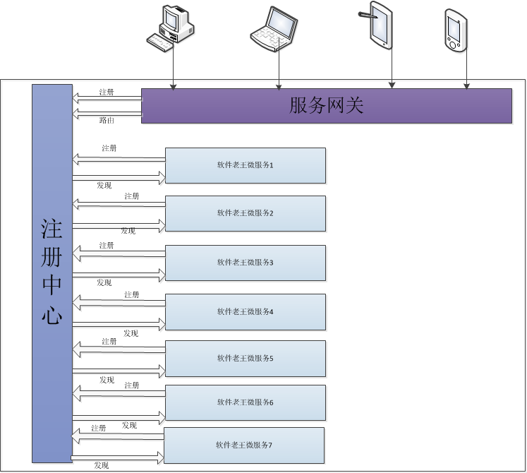
（一）所有应用或者服务要想对外提供服务（包括网关），必须首先到注册中心进行注册。
（二）所有访问通过服务网关进行访问，然后由服务网关路由到对应服务中心进行交互访问。
以SA上的JAVA代码数据采集SiteAnalysis模块举例：
在eureka注册中心注册自己模块的服务：
SA代码路径`health/package/itoa-3.0/metadata/scripts/web-backend-props/itoa-site-analysis.properties
x
spring.application.name=SiteAnalysiseureka.client.service-url.defaultZone=http://itoa-eureka:8080/eurekaeureka.instance.prefer-ip-address=trueeureka.client.healthcheck.enable=true#eureka.instance.instanceId=${spring.application.name}:Maiintneureka.instance.hostname=itoa-site-analysis在zuul网关配置中增加相应路由:
SA代码路径health/package/itoa-3.0/metadata/scripts/web-backend-props/itoa-datacore.properties
x
#ZUUL SiteAnalysiszuul.SiteAnalysis.path=/SiteAnalysis/**zuul.routes.SiteAnalysis.stripPrefix=falsezuul.routes.SiteAnalysis.serviceId=SiteAnalysis至此，便可以在外部调用SA上自己开发的SiteAnalysis模块相关接口
在应用分析下面添加子页签：
metadata\scripts\register-ucenter\menu\sdwan\sa_sdwan.json——sdwan页签配置文件
x
{ "id": "wan.analysis.health.application.applicationanalysis", "url": "/app/itoa/#/healthAnalysis/appStreamAnalysis/siteAppPerformance/applicationPerformance", "nameEn": "Application Group Flow Analysis", "nameZh": "应用流分析", "priority": 11, "appName": "ucenter-analyzer", "parentId": "wan.analysis.health.application", "productName": "AD-WAN"},metadata/scripts/register-ucenter/menu/sdwan/single_sdwan.json——单机版sdwan页签配置文件
x
{ "id": "singleWan.analysis.health.application.applicationanalysis", "url": "/app/itoa/#/healthAnalysis/appStreamAnalysis/siteAppPerformance/applicationPerformance", "nameEn": "Application Group Flow Analysis", "nameZh": "应用流分析", "priority": 11, "appName": "sa-sdwan", "parentId": "singleWan.analysis.health.application", "productName": "SA-WAN"}metadata/scripts/register-ucenter/menu/universe/universe_sdwan.json —— 全域场景页签配置文件
{ "id": "ucenter.analysis.health.application.applicationanalysis", "url": "/app/itoa/#/healthAnalysis/appStreamAnalysis/siteAppPerformance/applicationPerformance", "nameEn": "Application Group Flow Analysis", "nameZh": "应用流分析", "priority": 51, "appName": "ucenter-analyzer", "parentId": "ucenter.analysis.health.application", "productName": "UCenter", "menuType": "universe"},
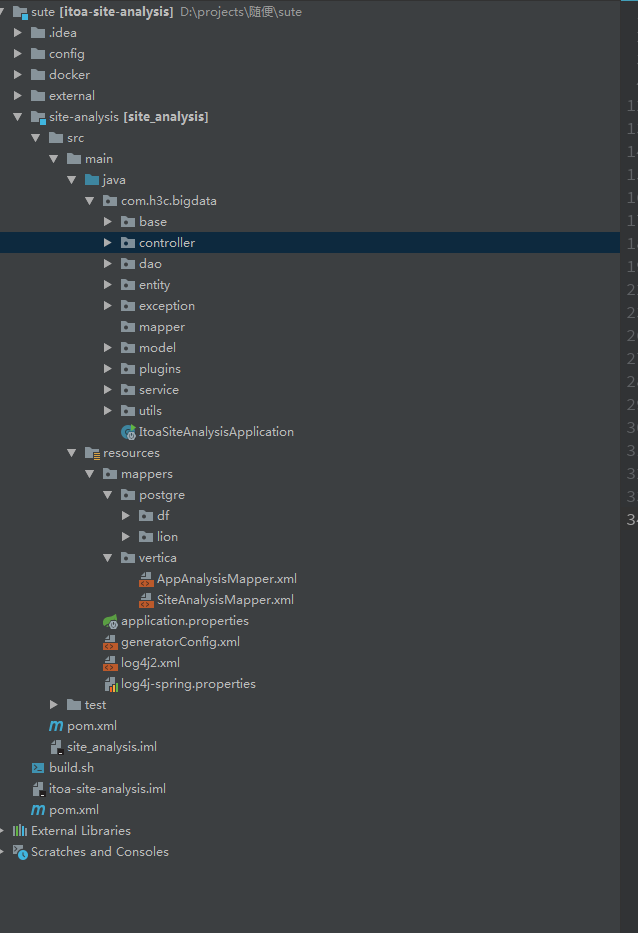
bigdata：
base: 基础公共类
controller:视图层，对外提供接口，提供接口路径，接收前端参数。——1
service: controller接收参数之后，调用service接口，进行运算或者逻辑处理。——2
dao: service需要查数据库是，提供数据库接口. ——3
entity / model : 自定义实体类
exception ： 自定义异常
plugins : 插件，例如数据库的启动类，在spring启动时，会扫描并自动注入，完成连接。
utils: 公共工具类
resources：配置文件 ，包括xml，properties等
application.properties : spring项目配置文件
log4j2.* :日志配置文件，包含日志输出类型，文件位置等
mapper: sql语句。
test：测试用例